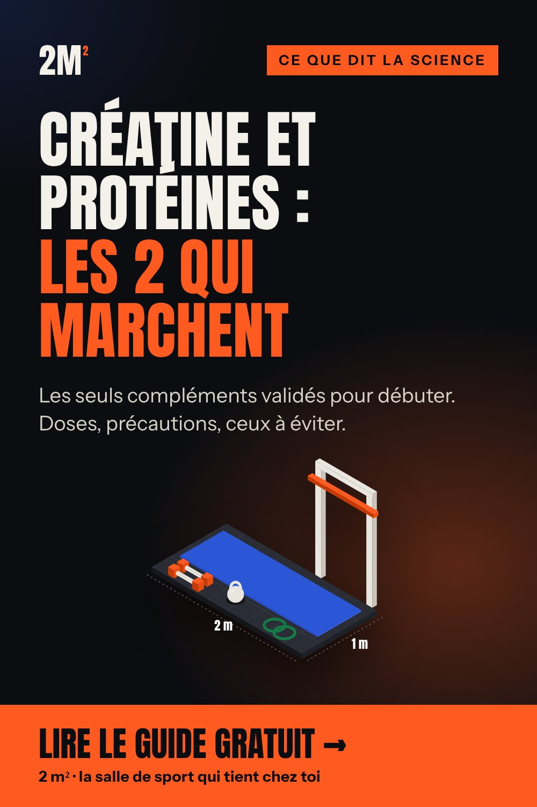

Les compléments ne remplacent ni l'entraînement ni une alimentation équilibrée. Mais deux d'entre eux sont solidement étudiés et utiles quand on fait de la musculation : la créatine et les protéines en poudre. Le reste est souvent du marketing.
La créatine
C'est le complément le plus étudié du sport. En Europe, une seule allégation est autorisée : la créatine augmente les performances physiques lors de séries successives d'exercices très intenses et de courte durée, pour un apport de 3 g par jour. Elle ne vaut que pour les adultes qui font des efforts intenses, comme la musculation (Vidal).
Côté sécurité, la Société internationale de nutrition sportive (ISSN) a passé en revue les études en 2017 : la supplémentation, à court et à long terme, est jugée sûre et bien tolérée chez les personnes en bonne santé (ISSN, 2017).
Comment la prendre
- 3 g par jour, tous les jours, même les jours sans séance. La régularité compte plus que l'heure.
- Dans un verre d'eau ou un shaker. Pas besoin de « phase de charge ».
- Une légère prise de poids peut arriver au début : c'est de l'eau stockée dans les muscles.
- Choisis de la créatine monohydrate pure : c'est la forme la plus étudiée.
Les protéines
Quand on se muscle, on a besoin de plus de protéines. Selon l'ISSN, un apport de 1,4 à 2,0 g de protéines par kilo de poids de corps et par jour suffit à la plupart des personnes qui s'entraînent pour construire et garder leur muscle (ISSN, 2017). Pour une personne de 70 kg, cela fait environ 100 à 140 g par jour.
L'alimentation peut suffire (viande, poisson, œufs, laitages, légumineuses). La poudre est simplement pratique : un shaker après la séance ou au petit-déjeuner, et l'objectif est plus facile à atteindre.
Les compléments à éviter
L'Anses, l'agence française de sécurité sanitaire, met en garde contre les compléments vendus pour « prendre du muscle » ou « brûler les graisses ». Entre 2016 et février 2024, elle a recensé 154 cas d'effets indésirables, dont 18 très graves (Anses). Évite donc :
- les « brûleurs de graisse » et les produits minceur miracles ;
- les boosters riches en caféine avant ou pendant le sport : l'Anses les déconseille ;
- le cumul de plusieurs compléments, ou leur association avec des médicaments.
Qui doit demander l'avis d'un médecin
Parle à ton médecin ou à ton pharmacien avant de prendre un complément si tu as moins de 18 ans, si tu es enceinte ou allaitante, si tu as un problème de reins, de foie ou de cœur, ou si tu prends un traitement. Ces conseils sont généraux et ne remplacent pas un avis médical.

Complète ton coin sport
Ces objets vont bien avec ce que tu viens de lire, et ajoutent de nouveaux exercices.
Questions fréquentes
La créatine est-elle dangereuse ?
Chez l'adulte en bonne santé, la créatine est jugée sûre et bien tolérée par la Société internationale de nutrition sportive. Demande un avis médical en cas de problème rénal, de grossesse ou de traitement.
Combien de créatine par jour ?
3 g par jour, c'est la dose retenue par l'allégation européenne pour les efforts courts et intenses.
Les protéines en poudre sont-elles obligatoires ?
Non. L'alimentation peut couvrir les besoins. La poudre est simplement pratique pour atteindre 1,4 à 2 g de protéines par kilo et par jour.